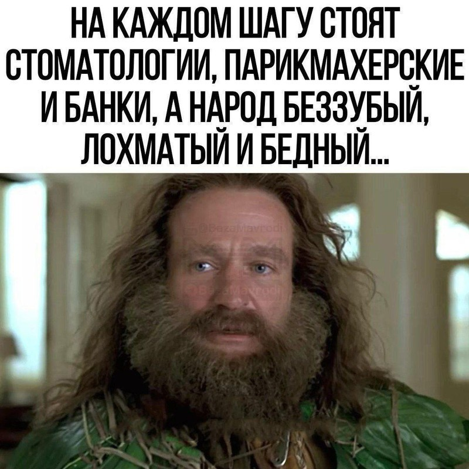

Регистрация в телеграм-боте

Банк – это финансовый институт, который по логике вещей должен служить людям. Приносить пользу своим клиентам.
Например, почта обслуживает людей. При помощи почтовой службы Вы можете отправить или получить письмо, какую-то посылку. Польза однозначна и очевидна. Почта – это отправление и доставка писем, посылок, грузов клиентов.
По этой простейшей логике, если банк это деньги, то клиенты банка, как минимум, не должны в них нуждаться. Но что же мы имеем на практике? Оглянитесь на своё окружение – 99% людей так или иначе являются клиентами банков. И при этом все они постоянно нуждаются в деньгах! Это в лучшем случае. А, как правило, люди ещё и должны денег банку!.. И посмотрите, как живут владельцы банков и спаянные с ними структуры власти.
Так кому служит банк? Клиентам? Или своим хозяевам, которые его и открывают только для того, чтобы получать прибыль, манипулируя деньгами людей? Ёмкий ответ Вы найдете в этой моей беседе с компетентным экономистом https://youtu.be/gd6WQ-g4IrE
Всё дело в том, что банк фактически является узаконенной "финансовой пирамидой", которая обогащает банкира и спаянные с ним структуры (власть, чиновники, СМИ и масс-медиа – всё это одна шайка-лейка, которую питает банковская система). Клиентов же – простых людей, рядовых граждан – банкир держит на крючке и натурально доит! Парадокс устройства банковской системы заключается в том, что все деньги в банке, которые банк выдает в кредит, – это деньги простых людей: наши накопления и сбережения, которые мы от безысходности и отсутствия альтернатив держим на банковских депозитах. Других денег в банке попросту нет. Только деньги людей.
Вспомните, как только началась СВО, а вслед за ней и мобилизация, – люди от страха и недоверия к нашим властям потащили свои банковские депозиты. Почитайте, как это было: https://www.rbc.ru/finances/20/10/2022/635146799a79477fe631e108
И это единственная причина поднятия базовой ставки! ЦБ РФ просто вынужден был повысить процент по депозитам, чтобы снова сделать их привлекательными для людей. Чтобы соблазн и искушение победили страх.
Но вместе с поднятием процентов по депозитам поднялись и проценты по кредитам. Ведь ростовщик зарабатывает на разнице! Что и вызывало повышение инфляции. Все эти сказки про то, что ЦБ РФ поднял базовую ставку для борьбы с инфляцией – это очередная наглая ложь в СМИ, рассчитанная на то, что у большинства простых людей банально нет времени разбираться в устройстве ростовщической системы. В которой люди вынуждены денно и нощно работать, чтобы прокормить и одеть свою семью. К тому же нужно постоянно платить по кредитам.
Заявляю со всей ответственностью. Всё с точностью до наоборот, чем нам внушают подконтрольные властям СМИ: повышение базовой ставки является основной причиной повышения инфляции. Единственной!
Суть этого процесса проста. Где сегодня предпринимателю взять первоначальный капитал на своё дело? Где взять деньги на оборудование, на аренду и ремонт помещения, на ЗП сотрудникам и прочие издержки на первое время? В основной своей массе – это, конечно же, банковские кредиты. Но ведь предприниматель открывает дело, чтобы получать прибыль. А тут банк начинает душить возросшими процентами по кредиту. Что делать предпринимателю, чтобы рассчитаться с банком и чтобы себе ещё хоть что-то на жизнь осталось? Чтобы самому хоть что-то заработать? Закладывать издержки по кредиту в цену своей продукции. Что, как Мы видим, и происходит – цены на всё растут.
Таким образом, в современном мире издержки по кредитам сидят в цене на все товары и услуги. И даже если Вы не берете кредиты – многие этим бравируют, – Вы платите по чужим кредитам! И чем выше базовая ставка в банковской системе, тем выше проценты по кредитам, – и тем сильнее растут цены в стране.
И кончится вся эта история "борьбы с инфляцией" наверняка именно так, как она уже кончалась в 90-х. Просто все об этом успешно забыли. А я напомню – почитайте https://www.gazeta.ru/column/mikhailov/4725013.shtml?updated – оснований полагать, что на этот раз всё будет как-то иначе, – нет. В смысле, ждать от наших одаренных властей чего-то иного, чего-то хорошего, – не приходится.
Вот, что из себя представляет современная банковская система, в основе которой лежит ссудный процент с частичными резервированием, – это "финансовая пирамида" в чистом виде! Таким нехитрым образом ростовщики сегодня манипулируют людьми посредством банковской "финансовой пирамиды". Надо сказать, что это рабство похуже крепостного. Ибо рабы мнят себя свободными – оковы-то незримые. Финансовые! Рабам кажется, что всё это естественно и иначе быть не может.
Но иначе быть может! И из этого рабства есть изящнейший выход - МММ 2.0. Недаром говорится "клин клином вышибают".
Что же такое МММ 2.0? Технически это точно такая же "финансовая пирамида", если говорить привычным для большинства языком. В том смысле, что здесь только деньги людей, и всё зависит от притока денег участников: проценты, которые в МММ 2.0 не гарантируются, платятся исключительно из денег участников.
Однако, как мы только что выяснили, всё то же самое и в банках. Но, в отличие от банков, в МММ 2.0 об этом прямым текстом сообщается всем на берегу – почитайте предупреждение в телеграм-боте или на сайте BazaMavrodi.com Деньги никуда нести не нужно – просто непредвзято прочтите и осмыслите.
Но самое главное, что в МММ 2.0 все эти "немыслимые" проценты платятся простым участникам! Простым людям!! То есть МММ 2.0 работает не на организатора (его здесь фактически и нет), а на самих участников. Даже чисто технически все деньги МММ 2.0 находятся на личных дебетовых картах участников – простых людей. И они их переводят друг другу напрямую безо всяких гарантий, обещаний, договоров, условий срочности и возвратности. В МММ 2.0 люди безвозмездно обмениваются друг с другом своими деньгами. Что, между прочим, абсолютно законно – почитайте официальные ответы МВД и Минфина https://drive.google.com/drive/folders/0B-eI2w5KJoObZHhQbWNwZTNKZW8?resourcekey=0-ZazFM_bnfrpd9T3KHVzYaw
По закону с таких переводов даже налогов платить не нужно. Это абсолютно законная неформальная Касса Взаимопомощи.
Резюмирую. Можно сказать, в МММ 2.0 каждый участник сам себе банкир и сам себе клиент. МММ 2.0, в отличие от банковской пирамиды, работает на простых людей! И это единственная причина, по которой власти на протяжении десятилетий прикладывают столько усилий и тратят кучу денег, чтобы через подконтрольные СМИ создать в общественном сознании негативный образ Сергея Мавроди и системы МММ. Других причин нет! МММ делает простых людей свободными от навязанных предрассудков, банковских кредитов и депозитов.
Спрашивается, на хрена человеку, который получает предположительно от 20% до 100% в месяц, какие-то кредиты и депозиты? Зачем такому человеку ходить на ненавистную работу, чтобы тупо выжить? Да такой человек будет заниматься своей жизнью, семьей и любимым делом! Деньги-то у него уже есть. Он даже в политику лезть не будет. Таким образом, МММ 2.0 буквально выбивает почву из-под ног банкиров. Она ставит всё с головы на ноги: в МММ настоящие хозяева денег – простые люди, рядовые граждане – получают всю прибыль. МММ 2.0 делает людей не просто свободными, эта система делает нас – Людьми!
Простое доказательство, как СМИ врут про МММ 2.0, – найдите в интернете и посмотрите ток-шоу "Пусть говорят" про МММ 2.0, которое аж в двух(!) частях вышло на "первом" в конце января 2025 года. После чего посмотрите Разоблачение экспертов "Пусть говорят" про МММ 2.0 – https://youtu.be/tB_665y_6Ls (стоит сказать, что это разоблачающее видео лживые "эксперты" пытались удалить с нашего основного канала, набросав фейковых жалоб якобы на нарушение авторских прав, – нам даже канал из-за этого блокировали, – так эти лживые позорники пытаются скрыть правду). После чего можете через эту призму пересмотреть все подобные передачи с участием Сергея Мавроди. Сразу предупреждаю – с ходу осознать и тем более принять весь масштаб лжи и фарса будет очень тяжело. Боль от ломки стереотипов неизбежна! Но любое развитие и движение вперед всегда происходит через боль.
Что касается цели МММ. Хозяева банковской пирамиды посредством всё тех же карманных СМИ взрастили в общественном сознании очередной миф, мол, "пирамида рухнет, когда кончатся новые вкладчики!" Это очередная бессовестная наглая ложь. И здесь всё тоже с точностью до наоборот: чем больше участников в МММ 2.0, тем более устойчивой становится система. В итоге, когда в МММ 2.0 вступит критическая масса людей, она станет замкнутой, как и банковская пирамида. Которая, подобно липкой паутине, опутала весь мир и сделала всех людей на планете своими рабами.
Если коротко, суть замкнутой системы заключается в том, что деньги не выходят за пределы этой системы. Например, сколько бы денег Вы ни получили в МММ 2.0, Вы их потратите. Что, по сути, означает – передадите их другому человеку в обмен на товар или услугу. А этот человек тоже является участником МММ 2.0, соответственно, он тут же вернет эти деньги обратно в систему. Ведь где еще платится предположительно от 20% до 100% в месяц?!..
Именно так в настоящее время и работает банковская пирамида – деньги не выходят за её пределы. Чтобы здесь сейчас не углубляться в нюансы и не расписывать много текста, настоятельно рекомендую посмотреть ёмкое подробное видео на этот счет на нашем основном канале: https://youtu.be/ZnQUWyDB1wU – зря, что ль, записывал?
К тому же это фундаментальный вопрос в понимании устройства "финансовых пирамид". Как только Вы получите понятие "замкнутой системы", Вы осознаете масштабы обмана, в котором мы все пытаемся выжить. Ведь жизнью то, что сегодня происходит в мире, – не назовешь.
Добро пожаловать в реальность, которую Мы прямо сейчас создаем своими руками! Всё изучите и присоединяйтесь к разумным людям. И помните: наша жизнь только в наших руках. Действуя, Мы натурально меняем эту реальность, меняем этот мир. А бездействуя, Мы являемся лишь ведомыми объектами – приспособленцами, внушившими себе, что от нас ничего не зависит. Еще как зависит. Всё только от нас и зависит!
Вместе Мы Можем Многое! И Мы Меняем Мир!
Регистрация в телеграм-боте